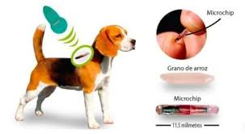

El Pet Travel Microchip es un dispositivo de identificación obligatorio en muchos países para el traslado de mascotas. Se implanta de forma segura bajo la piel de tu mascota y contiene un número único que permite su rastreo en bases de datos globales.
Puedes acudir a nuestra Veterinaria Tuki para la implantación del microchip. Nuestros especialistas te asesorarán sobre los requisitos y el proceso para viajar con tu mascota.